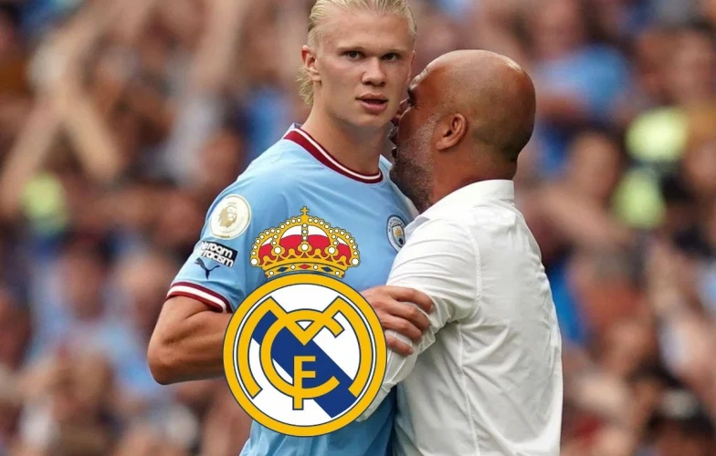
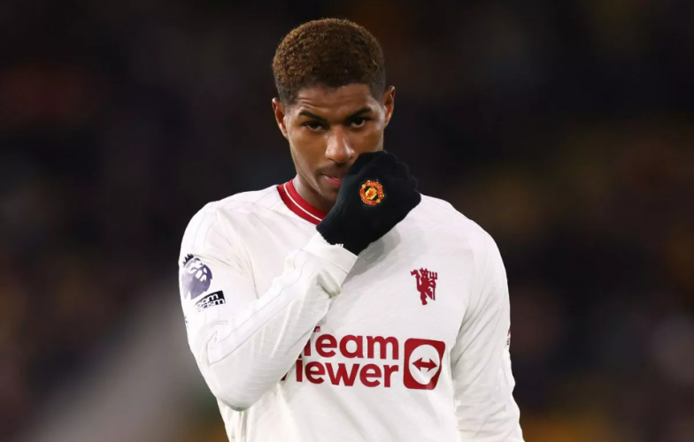
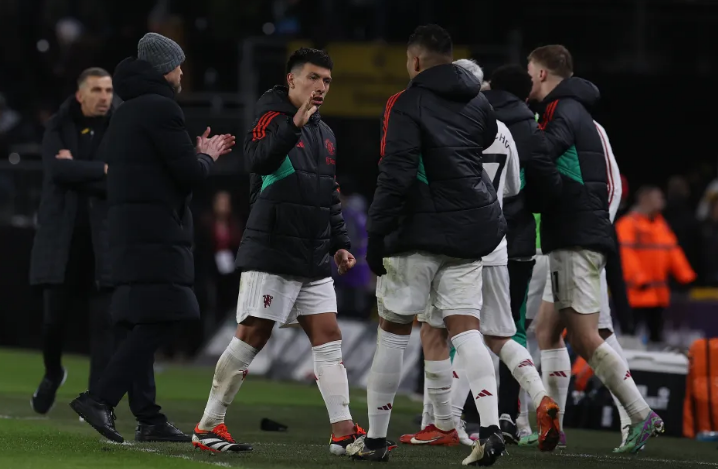
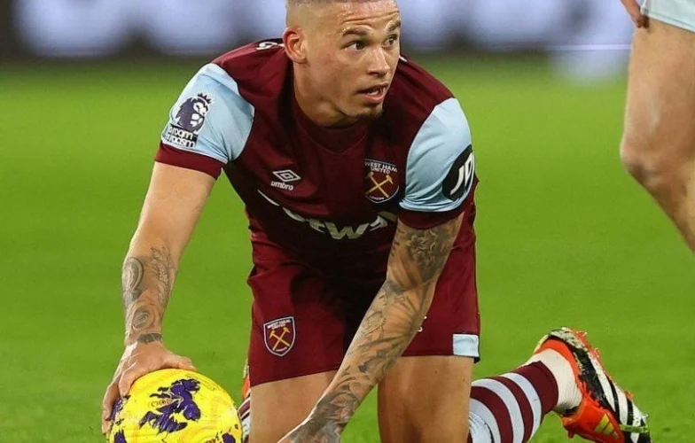
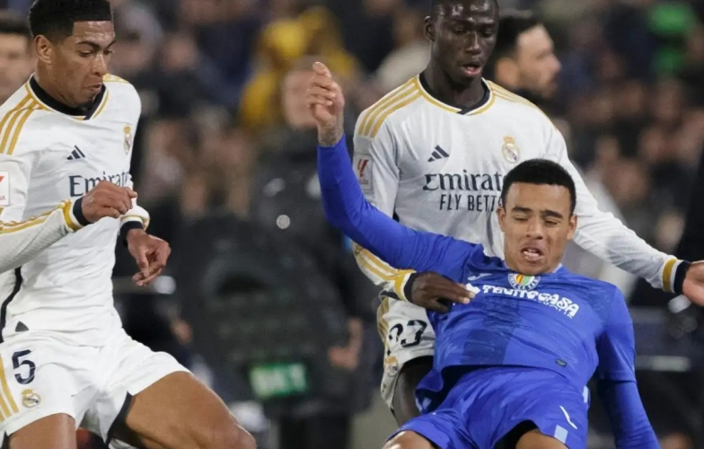
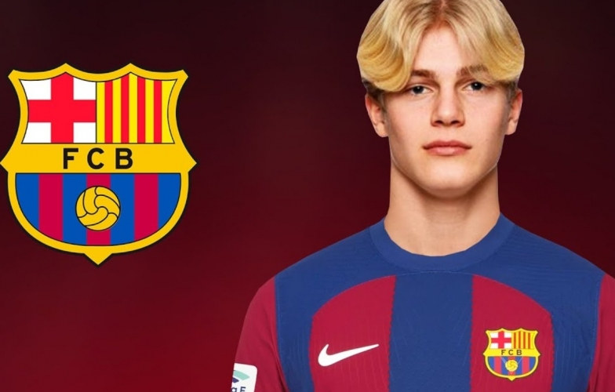

Tin tức thể thao

Pep Guardiola chính thức lên tiếng về vụ Real Madrid chiêu mộ Haaland
HLV Pep Guardiola của Man City mới đây đã trả lời những tin đồn liên quan đến việc Erling Haaland chuyển đến Real Madrid.

Marcus Rashford và Kobbie Mainoo đã nhận được những lời khen từ Erik ten Hag sau màn trình diễn trước Wolves.
Ten Hag khen ngợi 2 cái tên sau trận gặp Wolves
Marcus Rashford và Kobbie Mainoo đã nhận được những lời khen từ Erik ten Hag sau màn trình diễn trước Wolves.

Fan MU lo sốt vó vì Martinez
Mới đây, NHM Man United đã bắt gặp hình ảnh Lisandro Martinez phải được chăm sóc bởi các bác sĩ ngay sau khi được Ten Hag rút ra khỏi sân trong trận gặp Wolves.

Ra mắt West Ham, Kalvin Phillips mắc sai lầm tai hại ngay lần chạm bóng thứ 2
Kalvin Phillips đã có một khởi đầu tồi tệ trong trận ra mắt West Ham sau khi giúp Bournemouth vượt lên dẫn trước.

Bellingham xúc phạm Greenwood? cơ quan có thẩm quyền đang vào cuộc
Liên đoàn bóng đá Tây Ban Nha (RFEF) được cho là đã vào cuộc đối với cáo buộc về việc Jude Bellingham có lời lẽ thiếu chuẩn mực với Mason Greenwood.

Barca để mất tài năng trẻ sáng giá trong ngày chót của TTCN
Cầu thủ trẻ người Thụy Điển Lucas Bergvall đã quyết định từ chối sự quan tâm từ Barcelona và ký hợp đồng với Tottenham.